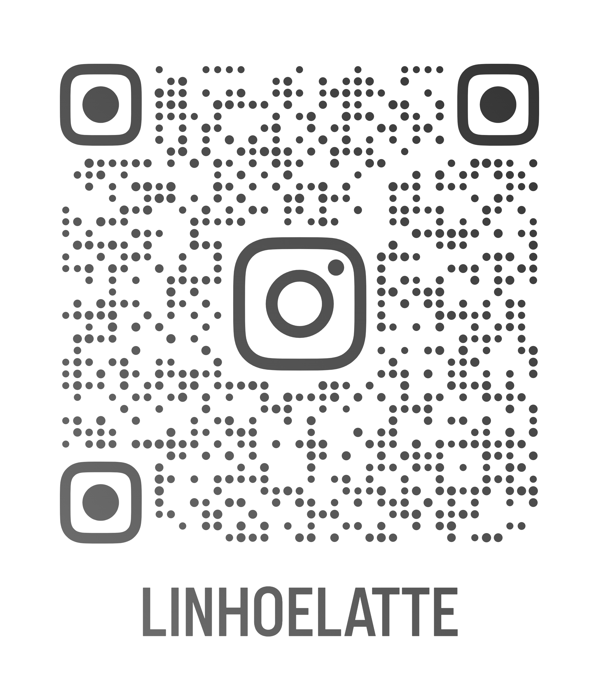

Como contribuir
A Linho & Latte promove a doação de roupas infantis em bom estado para famílias em vulnerabilidade. Toda contribuição é bem-vinda — e transforma vidas.
As doações podem ser feitas diretamente no nosso espaço, com todo carinho e cuidado que as crianças merecem.
Você pode ajudar doando roupas infantis, alimentos não perecíveis, ou até mesmo apoiando nosso trabalho por meio das redes sociais.
👉 Clique aqui para visitar nosso Instagram
